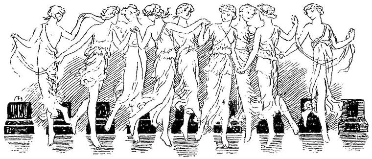

Have we pass’d through, not without much content
In many singularities; but we saw not
That which my daughter came to look upon,
The state of her mother.”
Winter’s Tale.
It seemed to me strange, that all this time I had heard no music in the fairy palace. I was convinced there must be music in it, but that my sense was as yet too gross to receive the influence of those mysterious motions that beget sound. Sometimes I felt sure, from the way the few figures of which I got such transitory glimpses passed me, or glided into vacancy before me, that they were moving to the law of music; and, in fact, several times I fancied for a moment that I heard a few wondrous tones coming I knew not whence. But they did not last long enough to convince me that I had heard them with the bodily sense. Such as they were, however, they took strange liberties with me, causing me to burst suddenly into tears, of which there was no presence to make me ashamed, or casting me into a kind of trance of speechless delight, which, passing as suddenly, left me faint and longing for more.
Now, on an evening, before I had been a week in the palace, I was wandering through one lighted arcade and corridor after another. At length I arrived, through a door that closed behind me, in another vast hall of the palace. It was filled with a subdued crimson light; by which I saw that slender pillars of black, built close to walls of white marble, rose to a great height, and then, dividing into innumerable divergent arches, supported a roof, like the walls, of white marble, upon which the arches intersected intricately, forming a fretting of black upon the white, like the network of a skeleton-leaf. The floor was black.
Between several pairs of the pillars upon every side, the place of the wall behind was occupied by a crimson curtain of thick silk, hanging in heavy and rich folds. Behind each of these curtains burned a powerful light, and these were the sources of the glow that filled the hall. A peculiar delicious odour pervaded the place. As soon as I entered, the old inspiration seemed to return to me, for I felt a strong impulse to sing; or rather, it seemed as if some one else was singing a song in my soul, which wanted to come forth at my lips, imbodied in my breath. But I kept silence; and feeling somewhat overcome by the red light and the perfume, as well as by the emotion within me, and seeing at one end of the hall a great crimson chair, more like a throne than a chair, beside a table of white marble, I went to it, and, throwing myself in it, gave myself up to a succession of images of bewildering beauty, which passed before my inward eye, in a long and occasionally crowded train. Here I sat for hours, I suppose; till, returning somewhat to myself, I saw that the red light had paled away, and felt a cool gentle breath gliding over my forehead. I rose and left the hall with unsteady steps, finding my way with some difficulty to my own chamber, and faintly remembering, as I went, that only in the marble cave, before I found the sleeping statue, had I ever had a similar experience.
After this, I repaired every morning to the same hall; where I sometimes sat in the chair and dreamed deliciously, and sometimes walked up and down over the black floor. Sometimes I acted within myself a whole drama, during one of these perambulations; sometimes walked deliberately through the whole epic of a tale; sometimes ventured to sing a song, though with a shrinking fear of I knew not what. I was astonished at the beauty of my own voice as it rang through the place, or rather crept undulating, like a serpent of sound, along the walls and roof of this superb music-hall. Entrancing verses arose within me as of their own accord, chanting themselves to their own melodies, and requiring no addition of music to satisfy the inward sense. But, ever in the pauses of these, when the singing mood was upon me, I seemed to hear something like the distant sound of multitudes of dancers, and felt as if it was the unheard music, moving their rhythmic motion, that within me blossomed in verse and song. I felt, too, that could I but see the dance, I should, from the harmony of complicated movements, not of the dancers in relation to each other merely, but of each dancer individually in the manifested plastic power that moved the consenting harmonious form, understand the whole of the music on the billows of which they floated and swung.
At length, one night, suddenly, when this feeling of dancing came upon me, I bethought me of lifting one of the crimson curtains, and looking if, perchance, behind it there might not be hid some other mystery, which might at least remove a step further the bewilderment of the present one. Nor was I altogether disappointed. I walked to one of the magnificent draperies, lifted a corner, and peeped in. There, burned a great, crimson, globe-shaped light, high in the cubical centre of another hall, which might be larger or less than that in which I stood, for its dimensions were not easily perceived, seeing that floor and roof and walls were entirely of black marble.
The roof was supported by the same arrangement of pillars radiating in arches, as that of the first hall; only, here, the pillars and arches were of dark red. But what absorbed my delighted gaze, was an innumerable assembly of white marble statues, of every form, and in multitudinous posture, filling the hall throughout. These stood, in the ruddy glow of the great lamp, upon pedestals of jet black. Around the lamp shone in golden letters, plainly legible from where I stood, the two words—
TOUCH NOT!
There was in all this, however, no solution to the sound of dancing; and now I was aware that the influence on my mind had ceased. I did not go in that evening, for I was weary and faint, but I hoarded up the expectation of entering, as of a great coming joy.
Next night I walked, as on the preceding, through the hall. My mind was filled with pictures and songs, and therewith so much absorbed, that I did not for some time think of looking within the curtain I had last night lifted. When the thought of doing so occurred to me first, I happened to be within a few yards of it. I became conscious, at the same moment, that the sound of dancing had been for some time in my ears. I approached the curtain quickly, and, lifting it, entered the black hall. Everything was still as death. I should have concluded that the sound must have proceeded from some other more distant quarter, which conclusion its faintness would, in ordinary circumstances, have necessitated from the first; but there was a something about the statues that caused me still to remain in doubt. As I said, each stood perfectly still upon its black pedestal: but there was about every one a certain air, not of motion, but as if it had just ceased from movement; as if the rest were not altogether of the marbly stillness of thousands of years. It was as if the peculiar atmosphere of each had yet a kind of invisible tremulousness; as if its agitated wavelets had not yet subsided into a perfect calm. I had the suspicion that they had anticipated my appearance, and had sprung, each, from the living joy of the dance, to the death-silence and blackness of its isolated pedestal, just before I entered. I walked across the central hall to the curtain opposite the one I had lifted, and, entering there, found all the appearances similar; only that the statues were different, and differently grouped. Neither did they produce on my mind that impression—of motion just expired, which I had experienced from the others. I found that behind every one of the crimson curtains was a similar hall, similarly lighted, and similarly occupied.
The next night, I did not allow my thoughts to be absorbed as before with inward images, but crept stealthily along to the furthest curtain in the hall, from behind which, likewise, I had formerly seemed to hear the sound of dancing. I drew aside its edge as suddenly as I could, and, looking in, saw that the utmost stillness pervaded the vast place. I walked in, and passed through it to the other end.
There I found that it communicated with a circular corridor, divided from it only by two rows of red columns. This corridor, which was black, with red niches holding statues, ran entirely about the statue-halls, forming a communication between the further ends of them all; further, that is, as regards the central hall of white whence they all diverged like radii, finding their circumference in the corridor.
Round this corridor I now went, entering all the halls, of which there were twelve, and finding them all similarly constructed, but filled with quite various statues, of what seemed both ancient and modern sculpture. After I had simply walked through them, I found myself sufficiently tired to long for rest, and went to my own room.
In the night I dreamed that, walking close by one of the curtains, I was suddenly seized with the desire to enter, and darted in. This time I was too quick for them. All the statues were in motion, statues no longer, but men and women—all shapes of beauty that ever sprang from the brain of the sculptor, mingled in the convolutions of a complicated dance. Passing through them to the further end, I almost started from my sleep on beholding, not taking part in the dance with the others, nor seemingly endued with life like them, but standing in marble coldness and rigidity upon a black pedestal in the extreme left corner—my lady of the cave; the marble beauty who sprang from her tomb or her cradle at the call of my songs. While I gazed in speechless astonishment and admiration, a dark shadow, descending from above like the curtain of a stage, gradually hid her entirely from my view. I felt with a shudder that this shadow was perchance my missing demon, whom I had not seen for days. I awoke with a stifled cry.
Of course, the next evening I began my journey through the halls (for I knew not to which my dream had carried me), in the hope of proving the dream to be a true one, by discovering my marble beauty upon her black pedestal. At length, on reaching the tenth hall, I thought I recognised some of the forms I had seen dancing in my dream; and to my bewilderment, when I arrived at the extreme corner on the left, there stood, the only one I had yet seen, a vacant pedestal. It was exactly in the position occupied, in my dream, by the pedestal on which the white lady stood. Hope beat violently in my heart.
“Now,” said I to myself, “if yet another part of the dream would but come true, and I should succeed in surprising these forms in their nightly dance; it might be the rest would follow, and I should see on the pedestal my marble queen. Then surely if my songs sufficed to give her life before, when she lay in the bonds of alabaster, much more would they be sufficient then to give her volition and motion, when she alone of assembled crowds of marble forms, would be standing rigid and cold.”
But the difficulty was, to surprise the dancers. I had found that a premeditated attempt at surprise, though executed with the utmost care and rapidity, was of no avail. And, in my dream, it was effected by a sudden thought suddenly executed. I saw, therefore, that there was no plan of operation offering any probability of success, but this: to allow my mind to be occupied with other thoughts, as I wandered around the great centre-hall; and so wait till the impulse to enter one of the others should happen to arise in me just at the moment when I was close to one of the crimson curtains. For I hoped that if I entered any one of the twelve halls at the right moment, that would as it were give me the right of entrance to all the others, seeing they all had communication behind. I would not diminish the hope of the right chance, by supposing it necessary that a desire to enter should awake within me, precisely when I was close to the curtains of the tenth hall.
At first the impulses to see recurred so continually, in spite of the crowded imagery that kept passing through my mind, that they formed too nearly a continuous chain, for the hope that any one of them would succeed as a surprise. But as I persisted in banishing them, they recurred less and less often; and after two or three, at considerable intervals, had come when the spot where I happened to be was unsuitable, the hope strengthened, that soon one might arise just at the right moment; namely, when, in walking round the hall, I should be close to one of the curtains.
At length the right moment and the impulse coincided. I darted into the ninth hall. It was full of the most exquisite moving forms. The whole space wavered and swam with the involutions of an intricate dance. It seemed to break suddenly as I entered, and all made one or two bounds towards their pedestals; but, apparently on finding that they were thoroughly overtaken, they returned to their employment (for it seemed with them earnest enough to be called such) without further heeding me. Somewhat impeded by the floating crowd, I made what haste I could towards the bottom of the hall; whence, entering the corridor, I turned towards the tenth. I soon arrived at the corner I wanted to reach, for the corridor was comparatively empty; but, although the dancers here, after a little confusion, altogether disregarded my presence, I was dismayed at beholding, even yet, a vacant pedestal. But I had a conviction that she was near me. And as I looked at the pedestal, I thought I saw upon it, vaguely revealed as if through overlapping folds of drapery, the indistinct outlines of white feet. Yet there was no sign of drapery or concealing shadow whatever. But I remembered the descending shadow in my dream. And I hoped still in the power of my songs; thinking that what could dispel alabaster, might likewise be capable of dispelling what concealed my beauty now, even if it were the demon whose darkness had overshadowed all my life.